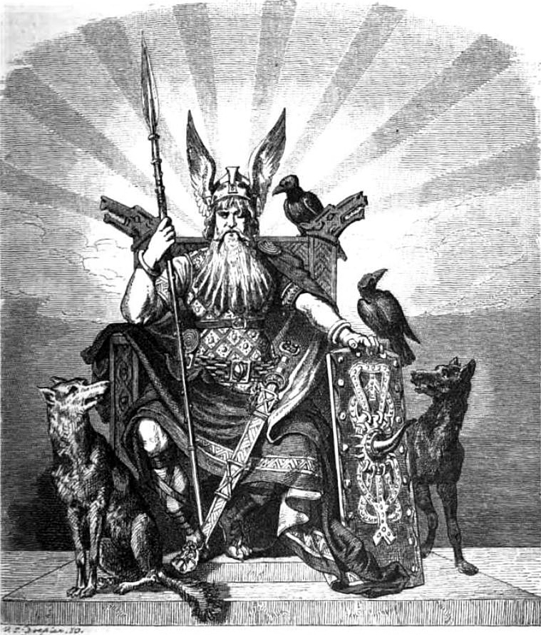

Norse Mythology
Home
Key Figures
Crucial Events

Odin
Odin, also known as the all-father is the most revered god in Norse mythology. He is often depicted as one-eyed and long-bearded wearing a cloak and a broad hat while wielding a spear called Gungnir.
Origins
Odin is the son of Borr and Bestla (the daughter of a giant). The oldest of three children, the others being Villi and Ve.